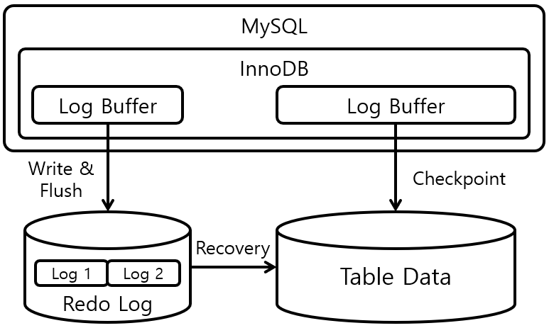

5.Структуры памяти. Однопроцессорные и многопроцессорные базы данных
Структуры памяти экземпляра БД
Экземпляр БД Oracle состоит из блоков разделяемой памяти, называемых system global area (SGA) и background процессов. SGA содержит три обязательные структуры данных:
- Thedatabasebuffercache / содержит копии блоков данных считанные из файлов данных
- Thelogbuffer / содержит данные о транзакциях которые ещё не записаны в redolog/li>/li>
- Thesharedpool / содержит проверенные SQL выражения и кэш словаря данных, содержащий таблицы, представления и триггеры/li>
Также дополнительно могут быть:
- Largepool
- Javapool
- Streemspool
Эти структруры показаны на рисунке 1-5 и мы обсудим обязательные структуры.
Пользовательские сессии тоже требуют памитя на сервере. Как мы помним это неразделяемая область памяти, которая называется PGA. У каждой сессии своя PGA.
Управление объёмом памяти может осуществляться автоматически, или управляться администратором базы данных. Рекомендуется использовать автоматический способ управления.

Рис.5.1 Ключевые структуры памяти System Global Area
Database buffer cache
Database buffer cache – это область где выполняются SQL команды. Когда мы обновляем данные, они не изменяются непосредственно в файлах данных на жёстком диске. Блоки данных, которые содержат данные с которыми мы работает вначале копируются в buffer cache (если они ещё не находятся там). Изменения (вставка, измнение или удаление данных) применяются к этим копиям данных в буфферном кэше. Затем эти блоки данных остаются в памяти некоторое время, пока место которое они занимают не понадобится для работы над какими-либо другими данными.
Когда мы хотим посмотреть какие-то данные – операция выдачи информации тоже происходит через кэш. Вначале находятся блоки данных которые мы запросили и копируются в буфер кэш (опять же если их ещё там нет); затем нужные данные переносятся в PGA для дальнейшей обработки.
Термин блок. Файлы данных представляют из себя данные сгруппированые в блоки фиксированной длины. Данные в таблицах (строки) и другие объекты такие как индексы и т.п. хранятся в этих блоках. Buffer cache также сгруппирован в структуры в памяти, чтобы вмещать в себя ровно один блок. Строки же могут быть разной длины: длина строки зависит от количества столбцов в ней, не важно есть ли в этих столбцах данные или нет. В зависимости от размера блока (размер выбирается администратором базы данных) и размера строки может быть несколько строк в блоке, или строка занимать несколько блоков. Структуру блока мы более детально рассмотрим в теме организация данных.
В идеале – блоки данных содержащие наиболее часто используемые данные будут в buffer cache, таким образом снижая количество операций чтения/записи. Как типичный пример работы буфер кэша рассмотрим пример типичной операции продавца в магазине, который получает данные о клиенте и обновляет их. Будут использованы примерно такие запросы:
SELECT CUSTOMER_ID,CUSTOMER_NAME FROM CUSTOMERS;
UPDATE CUSTOMERS SET CUSTOMER_NAME=’Вася’ WHERE CUSTOMER_ID=100;
COMMIT;
Для того чтобы выполнить SQL команду селект пришедшую от пользователя, серверный процесс этой сессии вначале посмотрим есть ли уже в буфере блок данных, который содержит необходимую информацию. Если эта информация найдена, данные будут прочитаны (hit) из буфера. Преположим что данные не в буфере (miss), тогда серверный процесс считает блоки из файлов данных и поместит их в буфер, перед тем как вернуть данные пользователю.
Потом пользователь запускает команды UPDATE и COMMIT, которые будут обработаны серверным процессом. Допуская, что данные всё ещё доступны в buffer cache на момент выполнения этого запроса, строка будет обновлена в буфер кэше. В данном примере мы получим эффективность использования буфера – 50%. 2 раза доступ к данным в кэше буфера, один раз чтение данных с диска. Формула расчёта: 1-«кол-во чтений с диска»/кол-во чтений с буфера»). В хорошо оптимизированных базах данных этот показатель может достигать 90%.
Буффер в котором данные в блоках отличаеются от данных этих блоков на дисковом пространстве – называбтся грязными (dirty buffers). Буфер будет чистым (clean) когда блок только скопирован с диска в память: в этот момент времени данные одинаковые и в памяти и на диске. В итоге, грязные блоки данных должны быть записан назад на диск и тогда буфер опять станет чистым. Но даже после записи на диск, блоки остаются в памяти, пока их не перепишут другими блоками.
Важно, что нету прямой зависмости количества обновлений данных в буфере (комманд COMMIT) и количества операция записи данных назад в файлы данных. Запись в файлы данных производится background process-ом – database writer.
Размер buffer cache очень важен для производительности. Значение должно быть адекватно рассчитано, не минимальное — чтобы все часто используемые блоки (неважно чистые или грязные) находились в буфере, но не настолько большое чтобы даже редко используемые данные тоже находились в буфере. Недостаточный объём приведёт к избыточному использованию чтения/записи с диска, так как блоки будут читаться с диска, тут же переписываться и снова читаться. Слишком большой объём не настолько плохо как слишкомй маленький (пока он меньше чем размер реальной доступной оперативной памяти) но тоже может вызывать определённые проблемы: например запуск базы данных будет дольше, так как требуется форматирование большого объёма памяти.
Память для buffer cache выделяется на этапе запуска экземпляра БД. До версии 9i нельзя изменить размер буфер кэша без перезапуска инстанса. Начиная с версии 10 g – размер буфера кэша можно изменять как автоматически (включить механизм автоматическго управления), так и вручную.
Буфер логов (log buffer)

Рис.5.2 Буфер логов (log buffer)
Буфер логов – это небольшая, краткосрочная выделенная область памяти для хранения записей изменений (change vector) до записи их в журнал (redo log) на диске. Запись изменений – это изменение произошедшее с чем либо; выполнений DML команда создаёт записи изменений. Сохранение всех таких записей – это гарантия того, что данные никогда не будут утеряны. Когда бы не изменились данные в блоке – запись изменений в блоке должна быть записана в журнал. Впоследствии эти записи могут быть считаны и применены к резервной копии файлов данных, если возникла необходимость.
Изменения не пишутся в журнал серверными процессами сессий. Если бы это было реализовано таким образом, сессиям пришлось бы ждать выполнения операций чтения/записи чтобы закончить выполнения любой DML команды. Вместо этого сессии пишут в буфер логов в памяти. Это гораздо быстрее чем писать на диск. Уже из буфера логов записи изменений (сформированные из разных сессий) пишутся в журнал.Одна операция записи в журнал может влючать множество изменений. Эти изменения пишутся примерно в реальном времени – но как только какая-нибудь сессия исполняет команду COMMIT – тут же происходит запись в журнал. Запись осуществляется background процессом – log writer-ом (LGWR).
Буфер логов небольшая (по сравнению с другими) область памяти, потому что время жизни данных там очень короткое. Изменения записываются в этот буфер и почти в тот же момент времени пишутся на диск. Нет необходимости делать размер больше чем несколько мегабайт, и более того, использование значение сильно большего чем значение по умолчанию может плохо сказаться на производительности. Значение по умолчанию устанавливается сервером Oracle в зависимости от количества процессоров на серверах.
Невозможно задать значение, меньше чем значение по умолчанию. Если попробовать сделать это, Oracle просто установит значение по умолчанию. Можно установить большее значение, но обычно этого делать не стоит. Основаная проблема в том, что когда выполняется команда COMMIT, запускается запись изменений из буфера на диск, и пока операции записи осуществляется, сессия которая запустила команду COMMIT будет ждать. Запись изменений важная часть архитектуры Oracle. Идея того что подтверждённые изменения никогда не будут утеряны в том, что выполнение команды commit считается успешным только тогда, когда данные изменены в buffer cache и записи зименений (vector change) записаны в журнал на диске (это значит что изменения могуть быть повторены при необходимости). Большой буфер логов может привести к тому что операция записи из него на диск будет занимать длительное время, а в это время сессия не может продолжать работу.
Память для буфера логов выделяется в момент запуска экземпляра БД и размер не может быть изменен без перезапуска. Это круговой буффер. Серверные процессы пишут записи изменений, и текущий указатель перемещается. Log writer записывает эти изменения на диск группами, и когда он это делает, место занятое этими записями становится снова доступным и может быть переписано новыми записями. В момент самой высокой нагрузки на сервер, может случиться так, что новые векторы должны быть записаны быстрее чем log writer может записать их на диск. Если такое случается все команды манипулированяи данными будут «подвисать» на некоторое время, пока log writer не очистит буфер.
Процесс записи изменений из буфера на диск одно из самых главных узких мест в архитектуре Oracle. Команды изменения не могут выполняться быстрее чем запись log writer-ом из буфера на диск.
The shared pool
Shared pool самая сложная область в SGA. Она состоит из под-областей, которые управляются Oracle сервером. Мы обсудим только 4 кмпонента:
Library cache
Data dictionary cache
PL/SQL area
SQL PL/SQL function result cache
Управление этими структурами происходит автоматически. Размер изменяется динамически в зависимости от писпользования, но не превышает размер всей области памяти. Shared pool может тоже изменять размер или посредством настройки автоматического управления или командами администратора базы данных.
Library cache
Library cache это область памяти где хранятся последние выполненные запросы в разобранном виде. Разбор (parsing) – это процесс преобразования инструкция написанный программистом в исполняемые команды понятные Oracle. Этот процесс Oracle запускает по требованию. Хранение разобранных команд очень сильно увеличивает производительность, потому что процесс разбора занимает время. Рассмотрим пример простого запроса:
SELECT * FROM PRODUCTS WHERE PRODUCT_ID=100;
Перед тем как выполнять запрос, надо узнать что написано в запросе и как его выполнять. Начиная с того, что такое PRODUCTS? Мжет быть это таблица? Или синоним, представление? Вообще существует ли такой объект? Дальше символ «звездочка» — какие столбцы в таблице PRODUCTS (если это действительно таблица)? Есть ли у пользователя необходимые права чтобы просматривать эту таблицу? Вопросы на эти ответы и многие другие надо найти в словаре данных. Важное замечание – алгоритм поиска разобранного запроса в кэше базируется на ASCII символах которые использованы в запросе. Небольшое различие (к примеру использование строчных символов вместо прописных) может привести к тому что запрос будет разбираться опять.
После разбора запроса, сервер должен решить как наиболее оптимально выполнять его. Есть ли индекс для поля PRODUCT_ID? Если он есть, будет ли быстрее использовать индекс чтобы найти нужную строку, или проще просмотреть всю таблицу? И ещё больше и больше запросов в словарь данных. Бывает что для простого запроса надо создать много запросов в словарь данных и разбор занимает больше времени чем выполнение самого запроса. Смысл library cache – хранить запросы в разобранном виде, готовые к выполнению. Первый вызов необходимо обработать – второй вызов такого же запроса, тут же готов к выполнению. В хороших приложениях запросы подготавливаются один раз – а выполняются миллионы раз. Это позволяет сэкономить огромное количество времени.
Кэш словаря данных (Data dictionary cache)
Data dictionary cache иногда называют row cache. В нём хранятся определения использованных объектов: описания таблиц, индексов, пользователей и другие мета-данные. Хранения этих данные в кэше в памяти SGA, где они доступны для всех сессий, в отличии от чтения их со словаря данных с диска, сильно увеличивает производительность разбора команд.
Кэш словаря данных хранит информацию об объектах, и когда нужно разобрать запрос это можно сделать без чтения данных из словаря данных. Предположим что выполняются 2 запроса
SELECT SUM(ORDER_AMOUNT) FROM ORDERS;
SELECT * FROM ORDERS WHERE ORDER_NO=100;
Два запроса нужно разобрать, поскольку они разные, но разбор первого запроса загрузит информацию о таблице ORDERS в кэш, и разбор второга запроса будет быстрее, потому что уже не нужно считывать информацию.
Область PL/SQL (PL/SQL Area)
Объектами PL/SQL являются процедуры, функции, пакеты, сложные типы, триггеры. Все они хранятся в словаре данных в виде исходного когда и скомпилированной программы. Когда PL/SQL объект вызывается сессией, необходимо прочитать нужную информацию из словаря данных. Для того чтобы исключить повторное чтение, эти объекты кэшируются в области PL/SQL в shared pool.
Первый вызод займёт некоторое время, так как нужно считать информацию, но следующие вызовы будут гораздо быстрыее так как объект уже будет в области PL/SQL.
SQL Query and PL/SQL Function Result Cache
Данный кэш появился в версии 11 g. Во многих приложениях, одинаковые запросы выполняются много раз, или одной сессией или разными. Создание этого кэша позволило Oracle серверу хранит результаты подобных запросов в памяти. Когда запрос будет выполняться повторно вместо его реального выполнения, результат возьмётся из кэша.
Механизм кэширования отслеживает изменились ли данные в таблицах, которые используются в такого рода запросах. Если данные изменились, запрос будет перевыполнен. Это позволяет устранить проблему выдачи некорретных данных.
PL/SQL функции работают примерно также. Когда функция выполняется – результат кэшируется. Если параметры или данные в таблицах используемых в функции изменились, функция будет перезапущена – иначе будет использоваться кэшированный результат.
По умолчанию, SQL Query PL/SQL function result cache отключен. Но если его включить – можно получить очень существенное ускорение производительности. Для данного вида кэша администратор может установить максимальный размер памяти.
Управление размером shared pool
Выбор оптимального объёма shared pool-а очень важен для производительности. Он должен быть достаточно большой для хранения всех часто используемых запросов и объектов, но не настолько большой чтобы хранить кэши для всех запросов и объектов. Слишком маленький размер снижает производительность так как сессиям нужно выделять память и записывать данные для запросов, потом другой запрос может переписать эту информацию и придётся повторять операцию опять. Слишком большой размер плохо влияет на производительность так как увеличивается время поиска в кэше.
Память в shared pool выделятся согласно алгоритму LRU (least recently used). Когда нужно выделить место в shared pool, сервер будет искать объекты которые не использовались дольше всех. Если этот объект потом понадобится опять – его придется перезагрузить (возможно снова удалив другой объект).
Shared pool выделяет память в момент запуска экземпляра БД. Начиная с версии 9i размер может изменяться динамически без перезапуска, либо механизмом атовматического управления, либо администратором.
Однопроцессорные и многопроцессорные компьютеры
Однопроцессорные ЭВМ
С появлением в США микропроцессоров (1971 г.) начал развиваться новый класс вычислительных машин — микроЭВМ. За короткое время микропроцессоры прошли большой путь развития: от первого поколения 4- и 8-разрядных микропроцессоров, выполненных по р-канальной МОП-технологии, до четвертого поколения 32- и 64-разрядных микропроцессоров.
В настоящее время реализуется программа по разработке в ближайшие 8—10 лет новых типов компьютеров1:
- • многопроцессорных компьютеров с высокой степенью параллелизма обработки информации;
- • компьютеров с нейронными сетями;
- • компьютеров, в которых для передачи информации используется свет.
Появление персональных компьютеров — наиболее яркое событие в области вычислительной техники, это динамично развивающийся сектор отрасли. С внедрением компьютеров решение задач информатизации общества поставлено на реальную основу. Кроме того, потребовался новый подход к организации систем обработки данных, к созданию новых информационных технологий. Возникла необходимость перехода от систем централизованной обработки данных к системам распределенной обработки данных, т.е. к компьютерным (вычислительным) сетям различных уровней — от локальных до глобальных
Ранее, при рассмотрении обобщенной структуры ЭВМ, отмечалось, что основным устройством, непосредственно осуществляющим переработку поступающей в ЭВМ информации, является процессор. Основные принципы построения процессоров, в общем-то, одинаковые, причем наиболее наглядно их можно продемонстрировать на примере простейшего микропроцессора.
Многопроцессорные ЭВМ
Назначение, область применения и способы оценки производительности многопроцессорных вычислительных систем
В
время сфера применения многопроцессорных вычислительных систем (МВС) непрерывно расширяется, охватывая все новые области в самых различных отраслях науки, бизнеса и производства. Стремительное развитие кластерных систем создает условия для использования многопроцессорной вычислительной техники в реальном секторе экономики.
Если традиционно МВС применялись в основном в научной сфере для решения вычислительных задач, требующих мощных вычислительных ресурсов, то сейчас, из-за бурного развития бизнеса резко возросло количество компаний, отводящих использованию компьютерных технологий и электронного документооборота главную роль. В связи с этим непрерывно растет потребность в построении централизованных вычислительных систем для критически важных приложений, связанных с обработкой транзакций, управлением базами данных и обслуживанием телекоммуникаций. Можно выделить две основные сферы применения описываемых систем: обработка транзакций в режиме реального времени (OLTP, on-line transaction processing) и создание хранилищ данных для организации систем поддержки принятия решений (Data Mining, Data Warehousing, Decision Support System).
^ Матричные структуры из очень большого числа простых процессоров.
В 80е г. г. были построены 3 очень большие двумерные системы. В их число входят7:
-распределенный матричный процессор DAP(distributed array processor) размером 64Х64, спроектированный фирмой ICL.
-сотовый логический процессор изображений CLIP-4(cellular logic image processor) размером96Х96, разработанный в лондонском университетском колледже,
-большой параллельный процессор MPP(massively parallel processor) размером 128Х128, спроектированный фирмами GoodYear-Aerospace и NASA Goddard.
В этих системах каждый из тысяч процессоров выполняет одну и ту же команду над различными потоками данных. Данные, которые необходимо обработать, и объем которых в идеале соответствует размерам матрицы процессоров, вводятся в систему таким образом, что каждый из процессоров имеет в собственной памяти одно подмножество таких данных, например, один элемент растра.
Затем каждый из процессоров обрабатывает данные, хранящиеся в собственной памяти, а также данные его ближайших соседей.
Архитектура МП-системы8:
- ЦП
- Шины коммуникаций контроллера прерываний
- Контроллер прерываний APIC
- Модуль общей памяти
- Контроллер шины памяти
- Буфер графических фреймов
- Контроллеры кэша
- Контроллер прерываний APIC
- Кэш-память
- Интерфейс ввода-вывода
- Высокопроизводительная шина
- Шина расширения ввода-вывода памяти
- Основные компоненты
МП-спецификация определяет системную архитектуру на основе следующих компонентов аппаратуры: системные процессоры, контроллеры APIC, системная память, шина расширения ввода-вывода.
Когда несколько приложений запрашивают обработку своих заданий на однопроцессорном компьютере, весь объем работы приходится выполнять его единственному процессору. Целью параллельной обработки обычно является повышение производительности приложений. Когда приложение выдает запрос на выполнение задания для многопроцессорного компьютера, компьютер разбивает это задание на логические подзадачи, а затем обрабатывает их с помощью нескольких процессоров параллельно, что уменьшает время выполнения задания.
Число подзадач, получаемых в результате разбиения одного большого задания, называется степенью параллельности (degree of parallelism).Уменьшение времени обработки информации, необходимого для выполнения задачи, прямо пропорционально степени параллельности. Быстродействие систем с параллельной обработкой стараются повышать так, чтобы обеспечить максимальную производительность каждого процессора системы.